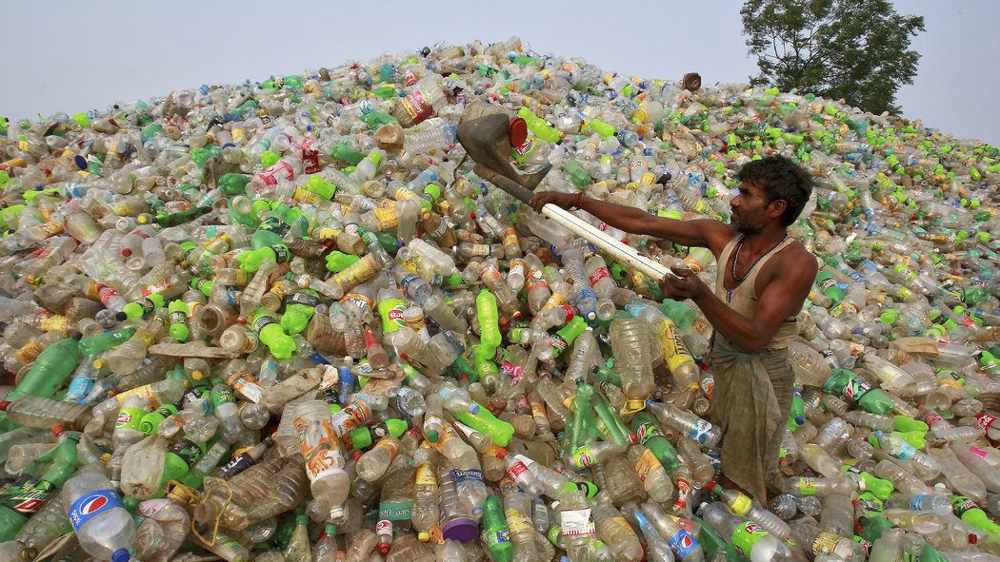

"Příroda si bez člověka hravě poradí, člověk bez přírody nikoliv."
Je zde i více příčin vzniku globálního oteplování. Kácení stromů, kvůli kterému je na zemi méně kyslíku, také situaci zhoršilo, společně s chovem krav, které vylučují plyny špatné pro atmosféru (methan).

Vykácené stromy
Stromy se kácí na výrobu dřevěného nábytku a papíru. Na Zemi se za sekundu vykácí stromy z plochy jedno fodbalového hřiště.
Aby se zmírnilo kácení stromů, je důležité šetřit s papírem a dřevem. Tomu pomůžeme třeba tříděním papíru, nebo pomáháním sázením stromů v lesní školce.
Lesní požáry jsou nebezpečné zejména v létě a můžeme jim zabránit správným zacházením s ohněm.
Pokud rozděláváme oheň, musíme najít vhodné místo. Oheň nesmíme rozdělávat v suché a vysoké trávě. Kolem ohně, musíme dát kameny, aby oheň nemohl utéct. Pokud nemáme kameny, můžeme vykopat díru a vní mít oheň rozdělaný. Oheň musíme stále hlídat a pokud už budeme chtít odejít, musíme ho uhasit. Aby jsme měli jistotu, že nám z ohně neuteče už žádná jiskra, polijeme oheň opatrně vodou nebo zasypeme pískem.
Asi největší znečištění způsobují vhozené odpadky do moří, které pomocí mořských proudů doplují nacjedno místo kde zůstávají. Takto vznikají "odpadkové ostrovy." Zvířátka do ostrovů pak vplují, zamotají se a jejich smrt je jasná.
Lidé také získávají ze dna moře ropu, která vytváří na hladině černé fleky a ty slepují zvířátkům peří a srst, brání průchodu světla a výměně vzduchu ve vodě.
Nevhazujme tedy odpadky do moře a vůebec do přírody.

Plasty se pomalu rozkládají a tak je jich čím dál tím víc
Musíme tedy omezit osapování plastů a věcí, které vytváří smog.
Pralesy se kácí, aby lidé měli více místa pro svá města, obydí a plantáže palmy olejnaté. Palma olejnatá je rostlina, ze které se vyrábí olej do některých potravin.
Když nebudeme jíst jídlo s tímto olejem, nebude nutné sázet další palmy a pralesy se přestanou kácet.
Odpadky musíme rozdělit podle materiálu. To pak vyhazujeme do pro nich určených kontejnerů.
- Bio odpad - ne ze všech materiálů jde něco nového vytvořit. Do bio odpadů dáváme jídlo, jako například ohryzek od jablka nebo slupka od banánu. Tyto materiály se v přírodě rozloží a proto jí nějak neškodí. To vše patří do hnědé popelnice.
- Papír - do papíru patří vše z něj vyrobené. Z takového použitého sešitu může firma k tomu určená vyrobit balíček kapesíků. Papír vkládáme do modrých kontejnerů
- Plast - do plastu vyhazujeme petláhve a například plastové pytlíky, či balíčky o jídla. Abychom poznali, zda daný výrobek patří sem, na jeho zadní straně v malém trojuhelníčku musí být napsané jedno z čísel-1,2,4,5,6,7. Plasty hážeme do žlutého kontejneru.
- Sklo - do skla můžeme vyhodit vše skleněné. Na sklo máme dva různé kontejnery. Do zeleného hážeme barevné sklo, do bílého průhledné sklo.
Pokud chceme vyhodit něco velkého co se do kontejneru s odpadem nevejde, můžeme to odvést na sběrný dvůr kde takovou věc zrecyklují.